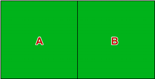

Causes of variation
In a completely randomised experiment, there are two potential reasons why the response in an experiment varies between experimental units.
In a completely randomised experiment, all variation is caused by the treatments or is considered as random variation.
Distinguishing the treatment effect and random variation
Experiments are conducted to determine the effect of different treatments. It is therefore essential that we can distinguish the treatment effects from random variation.
There must be enough data to estimate random variation separately from variation caused by the treatments.
The easiest way to do this is with repeat measurements for each treatment — replication. Differences between these replicates are not due to treatment effects so they contain information about the amount of random variation.
Using knowledge about the amount of random variation in the experiment, we can better assess whether or not observed differences between the treatments are more than can be attributed to chance.
Crop experiment in a field
Researchers want to discover whether two varieties of wheat (A and B) have the same yield. One field is available for the experiment and it is know from previous experiments that the fertility and drainage of the soil is uniform over the whole field. The initial design for the experiment is shown below — the varieties were randomly allocated to either the left or right side of the field.
